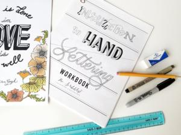
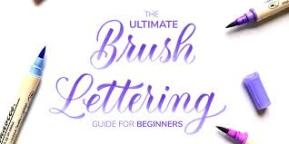
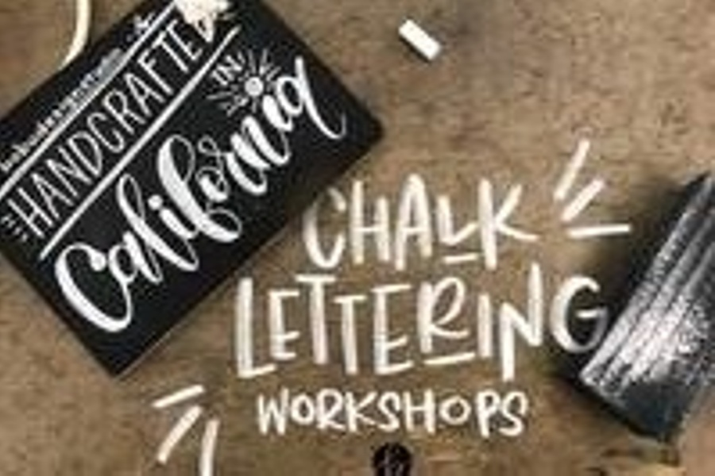
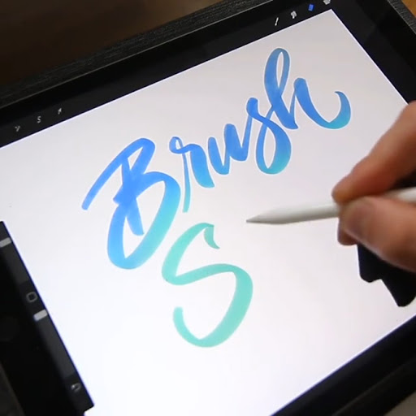

"Tipos de Lettering"

El lettering como fue mencionado en el video de la primera publicación es una tendencia que está obteniendo cada día más personas que lo practican por gusto o por querer mejorar su letra (como fue en mi caso), pero poco a poco uno va amando esta hermosa práctica, una de las principales metas aparte de enseñar las técnicas básicas y consejos, así como un poco más de información, es contagiar este gusto al lector:
En esta publicación hablaremos de los tipos de Lettering:
- Hand Lettering: 
- Brush Lettering: 
- Chalk Lettering: 
- Digital: 
En español se puede traducir como Lettering a mano, este tipo de lettering es muy diverso ya que se puede utilizar diferentes tipos de
letras como góticas, latinas, romanas, etc. o crear la propia. Así mismo puede ser de los más sencillos porque no hay necesidad de aprender una técnica en
específico para practicarlo, se puede utilizar cualquier plumón o rotuladores con punta redonda, calibrados o biselada sin necesidad de utilizar
los característicos plumones punta pincel, al no utilizar este tipo de plumones el trazo es más uniforme, teniendo como resultado un lettering uniforme y fino.
En este tipo de lettering es necesario una técnica en específico por lo que se recomienda practicarla para que sea más fácil y natural al momento de utilizarlo, es necesario un rotulador o plumón punta pincel o Brush Pen (si está en las posibilidades tenerlo ya que tienen un precio considerable es sugerible que sea cuando tengan bastante práctica para no dañar la punta) también se puede utilizar pinceles o acuarelas (de ahí la característica de este tipo de letra), este estilo es más similar al que practican un caligráfico profesional, con las letras ligadas y tipo caligrafía.
En este tipo de lettering se caracteriza por utilizarlo en un pizarrón y tiza esto es clave, además se puede utilizar cualquier tipo de letra y dibujar cualquier adorno.
Debido a esta nueva era, el lettering se puede utilizar de manera digital con alguna Tablet y pluma adaptada para esta herramienta, hay muchos programas que puedes utilizar para este medio, por ejemplo, Autodesk SketchBook utilizado principalmente para dibujar, pero permite esa versatilidad de utilizar su diferentes gamas y grosores para poder hacer lettering; también se encuentra disponible para teléfono celular. Otras aplicaciones que podemos utilizar son: Procreate, Photoshop o Illustrator.
En las siguientes semanas hablaremos más de la técnica y la práctica para poder empezar en este mundo, una recomendación inicial es que puedes utilizar desde un lápiz, cuadernos de preferencia de ralla o si quieres empezar viendo los materiales podemos utilizar los plumones Super Tips de Crayola son fáciles de conseguir y a un buen costo.

Garcia Montijo Meliza
Estudiante de Informática